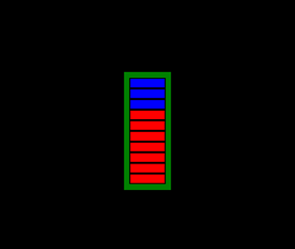

Introduction
This tutorial (installed in the directory StimulGL\examples\Tutorials\15_NeuroFeedBack) shows an example of how you can make use of the default TBVExchanger plugin, that can communicate with the Turbo-BrainVoyager (Version 3.2 or higher) software, and use this for creating a basic neurofeedback experiment.
Important! To successfully run this neurofeedback experiment we first have to make sure that we installed and configured the Turbo-BrainVoyager software correctly, for this please make use of the guidance of the Turbo-BrainVoyager getting started guide.
Aside the TBVExchanger plugin the script also makes use of a includes a common "RealTimeFeedback.qs" file that already implements the needed functionality for the communication with the Turbo-BrainVoyager software by making use of the TBVExchanger plugin. Furthermore this included file itself also includes a common "BasicQMLExperiment.qs" file which supports the creation of experiments that make use of the QML language.
Hands On
The Motor Imagery experiment

This Motor Imagery experiment first tries to connect to the Turbo-BrainVoyager, on which you have to execute the TCP/IP Data Export plugin, automatically over the TCP/IP network. Turbo-BrainVoyager can run on the same computer as which is used for running StimulGL.
An image of a thermometer (which had 10 levels) will be presented in the center of a black background (see figure). The surroundings of the thermometer indicates whether the participant should perform hand movement (squeeze left hand; green) or should rest (yellow).
This two blocks last both for 20 seconds (10 triggers of 2 seconds) and they are executed 10 times starting with the rest block.
Let's try this:
On the Turbo-BrainVoyager computer:
- Start Turbo-BrainVoyager
- Go to “Plugins” →“TCP/IP Data Export -- Server”. If you cannot see the plugin, please download it from the BrainVoyager website.
- In the pop-up window that follows, enter port number “55555” and click on the “OK” button.
On the StimulGL computer:
- Start StimulGL
- Open the file "MotorImagery.qs" file from the directory StimulGL\examples\Tutorials\15_NeuroFeedBack
- Execute this experiment file directly from within StimulGL by pressing the ‘F5’ shortcut key (Execute)
- Select "Testing_Mode" for the experiment mode
- Press the ‘Alt’ key to unlock the experiment
On the Turbo-BrainVoyager computer:
- Load the experiment as described in the getting started guide.
- To test the setup we have to change the ForceTRDelay option in the Statistics tab of the settings file to “Yes”.
- Save the settings and click on the Red record button in main user interface to start the experiment.
On the StimulGL computer:
- Press the 'CTRL' + 't' key combination to emulate the first experiment trigger which starts the experiment in the selected "Testing_Mode" that automatically emulates a trigger each 2 seconds.
- Wait 20 seconds for the second ("Feedback") block to execute and observe how the the visual analogue scale gives a feedback about the brain activity localized in the sma of the subject..
- You may use the 'CTRL' + ’a’ (abort) key combination to abort the experiment that is running.
Let's quickly examine the used Motor Imagery experiment files:
- The "MotorImagery.exml" file describes the experiment structure. As explained above we can see that there are 2 blocks defined ("Rest" and "Feedback") which are executed after each other 10 times. Each block lasts for 10 triggers which means that in testing mode each block takes (10*2 seconds = ) 20 seconds.
- The "MotorImagery.qml" file describes the experiment visual presentation and a function ("setTextAndBarLevelFunction()") that act as an interface between the experiment logic and the the experiment visual presentation. This function accepts two parameters (textString and nValue) which are used to control the Visual Analogue Scale on the screen while the experiment is running.
- The "MotorImagery.qs" script file describes the experiment logic:
- The common "RealTimeFeedback.qs" file is included for the needed functionality for the communication with the Turbo-BrainVoyager software by making use of the TBVExchanger plugin.
- An additional named ("MotorImagery") Output Window is added to the User Interface for debugging and data logging purpose.
- The to be used MotorImagery.exml and MotorImagery.qml file are set.
- The BasicExperiment.NewInitBlockTrial() script function is overided and here is made sure that the "setTextAndBarLevelFunction()" function defined in the MotorImagery.qml file is invoked at the each time with the correct parameter values.
- The BasicExperiment.ExperimentStateChanged() script function is overwritten and used to write some information to a Log Output Window that is automatically saved to a file after the experiment is aborted or stopped.
- The RealTimeFeedback.executePostStep() script function which is called automatically by theTBVExchanger plugin is used here to retrieve the mean value of a pre-defined ROI by calling the RealTimeFeedback.TBVExchangerObject.tGetMeanOfROI() function and returning that value to a locally defined CalculateAndStoreNewFeedBack(fRawValue) function that further processes this value and, depending of the current experiment block that is active, calls the "setTextAndBarLevelFunction()" function defined in the MotorImagery.qml file with a mean calculated value.